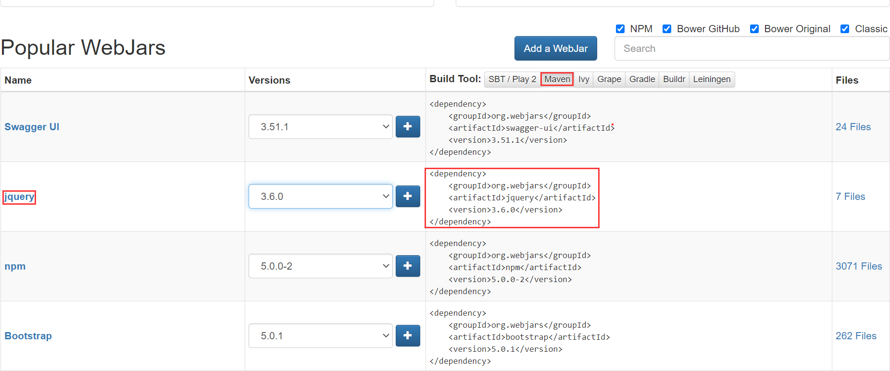
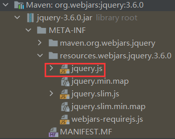
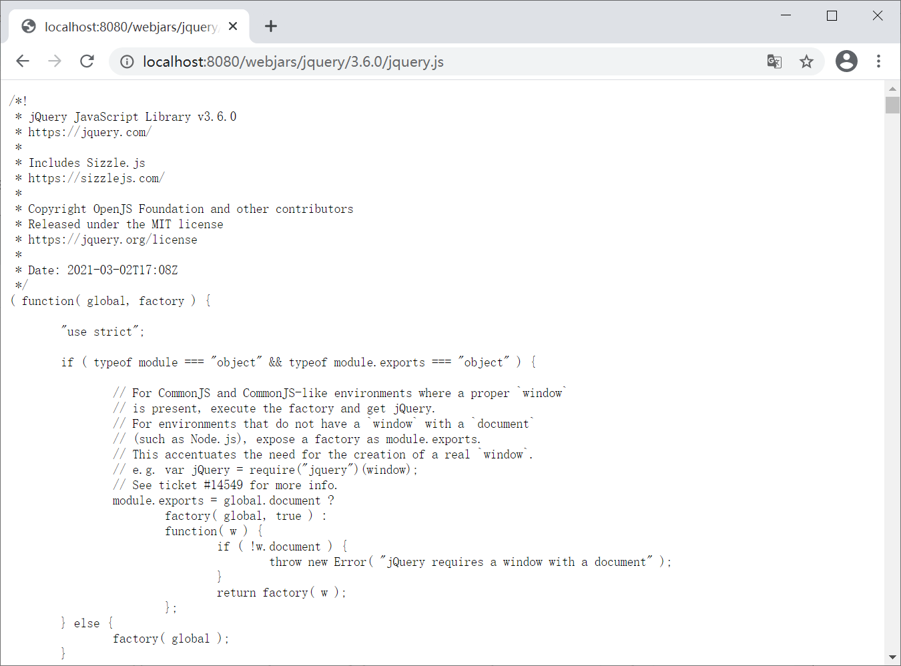
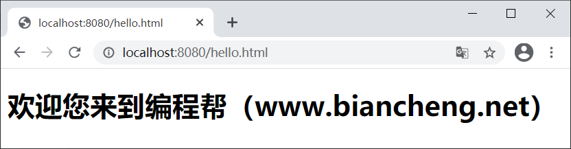
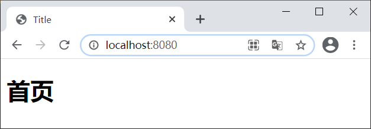

Spring Boot静态资源映射
在 Web 应用中会涉及到大量的静态资源，例如 JS、CSS 和 HTML 等。我们知道，Spring MVC 导入静态资源文件时，需要配置静态资源的映射；但在 SpringBoot 中则不再需要进行此项配置，因为 SpringBoot 已经默认完成了这一工作。
Spring Boot 默认为我们提供了 3 种静态资源映射规则：
WebJars 可以完美的解决上面的问题，它可以 Jar 形式为 Web 项目提供资源文件。
WebJars 可以将 Web 前端资源（JS，CSS 等）打成一个个的 Jar 包，然后将这些 Jar 包部署到 Maven 中央仓库中进行统一管理，当 Spring Boot 项目中需要引入 Web 前端资源时，只需要访问 WebJars 官网，找到所需资源的 pom 依赖，将其导入到项目中即可。
所有通过 WebJars 引入的前端资源都存放在当前项目类路径（classpath）下的“/META-INF/resources/webjars/” 目录中。
下图展示如何通过 WebJars 查找 JQuery 的 pom 依赖的过程。
Spring Boot 通过 MVC 的自动配置类 WebMvcAutoConfiguration 为这些 WebJars 前端资源提供了默认映射规则，部分源码如下。
通过以上源码可知，WebJars 的映射路径为“/webjars/**”，即所有访问“/webjars/**”的请求，都会去“classpath:/META-INF/resources/webjars/”查找 WebJars 前端资源。
2. Spring Boot 项目中引入的 jquery 的 Jar 包结构如下图。
3. 启动 Spring Boot，浏览器访问“http://localhost:8080/webjars/jquery/3.6.0/jquery.js”访问 jquery.js，结果如下图。
这些路径又被称为静态资源文件夹，它们的优先级顺序为：classpath:/META-INF/resources/ > classpath:/resources/ > classpath:/static/ > classpath:/public/ 。
当我们请求某个静态资源（即以“.html”结尾的请求）时，Spring Boot 会先查找优先级高的文件夹，再查找优先级低的文件夹，直到找到指定的静态资源为止。
2. 启动 Spring Boot，浏览器访问 “http://localhost:8080/hello.html”，结果如下图。
2. 启动 Spring Boot，使用浏览器访问“http://localhost:8080/”，结果如下图。
Spring Boot 默认为我们提供了 3 种静态资源映射规则：
- WebJars 映射
- 默认资源映射
- 静态首页（欢迎页）映射
WebJars 映射
为了让页面更加美观，让用户有更多更好的体验，Web 应用中通常会使用大量的 JS 和 CSS，例如 jQuery，Backbone.js 和 Bootstrap 等等。通常我们会将这些 Web 前端资源拷贝到 Java Web 项目的 webapp 相应目录下进行管理。但是 Spring Boot 项目是以 JAR 包的形式进行部署的，不存在 webapp 目录，那么 Web 前端资源该如何引入到 Spring Boot 项目中呢？WebJars 可以完美的解决上面的问题，它可以 Jar 形式为 Web 项目提供资源文件。
WebJars 可以将 Web 前端资源（JS，CSS 等）打成一个个的 Jar 包，然后将这些 Jar 包部署到 Maven 中央仓库中进行统一管理，当 Spring Boot 项目中需要引入 Web 前端资源时，只需要访问 WebJars 官网，找到所需资源的 pom 依赖，将其导入到项目中即可。
所有通过 WebJars 引入的前端资源都存放在当前项目类路径（classpath）下的“/META-INF/resources/webjars/” 目录中。
下图展示如何通过 WebJars 查找 JQuery 的 pom 依赖的过程。

图1：WebJars 查找 JQuery 的 POM 依赖
图1：WebJars 查找 JQuery 的 POM 依赖
Spring Boot 通过 MVC 的自动配置类 WebMvcAutoConfiguration 为这些 WebJars 前端资源提供了默认映射规则，部分源码如下。
public void addResourceHandlers(ResourceHandlerRegistry registry) {
if (!this.resourceProperties.isAddMappings()) {
logger.debug("Default resource handling disabled");
} else {
//WebJars 映射规则
this.addResourceHandler(registry, "/webjars/**", "classpath:/META-INF/resources/webjars/");
this.addResourceHandler(registry, this.mvcProperties.getStaticPathPattern(), (registration) -> {
registration.addResourceLocations(this.resourceProperties.getStaticLocations());
if (this.servletContext != null) {
ServletContextResource resource = new ServletContextResource(this.servletContext, "/");
registration.addResourceLocations(new Resource[]{resource});
}
});
}
}
通过以上源码可知，WebJars 的映射路径为“/webjars/**”，即所有访问“/webjars/**”的请求，都会去“classpath:/META-INF/resources/webjars/”查找 WebJars 前端资源。
示例 1
1. 在 Spring Boot 项目 spring-boot-springmvc-demo1 的 pom.xml 中添加以下依赖，将 jquery 引入到该项目中。
<dependency>
<groupId>org.webjars</groupId>
<artifactId>jquery</artifactId>
<version>3.6.0</version>
</dependency>
2. Spring Boot 项目中引入的 jquery 的 Jar 包结构如下图。

图2：WebJars jquery Jar 包结构
图2：WebJars jquery Jar 包结构
3. 启动 Spring Boot，浏览器访问“http://localhost:8080/webjars/jquery/3.6.0/jquery.js”访问 jquery.js，结果如下图。

图3：WebJars jquery 访问结果
默认静态资源映射
当访问项目中的任意资源（即“/**”）时，Spring Boot 会默认从以下路径中查找资源文件（优先级依次降低）：- classpath:/META-INF/resources/
- classpath:/resources/
- classpath:/static/
- classpath:/public/
这些路径又被称为静态资源文件夹，它们的优先级顺序为：classpath:/META-INF/resources/ > classpath:/resources/ > classpath:/static/ > classpath:/public/ 。
当我们请求某个静态资源（即以“.html”结尾的请求）时，Spring Boot 会先查找优先级高的文件夹，再查找优先级低的文件夹，直到找到指定的静态资源为止。
示例 2
1. 在 spring-boot-springmvc-demo1 的 src/main/resources 下的 static 目录中创建一个 hello.html，代码如下。<!DOCTYPE html> <html lang="en"> <head></head> <meta http-equiv="Content-Type" content="text/html; charset=UTF-8"/> <body> <h1>欢迎您来到编程帮（www.biancheng.net）</h1> </body> </html>
2. 启动 Spring Boot，浏览器访问 “http://localhost:8080/hello.html”，结果如下图。

图4：默认资源映射
图4：默认资源映射
静态首页（欢迎页）映射
静态资源文件夹下的所有 index.html 被称为静态首页或者欢迎页，它们会被被 /** 映射，换句话说就是，当我们访问“/”或者“/index.html”时，都会跳转到静态首页（欢迎页）。注意，访问静态首页或欢迎页时，其查找顺序也遵循默认静态资源的查找顺序，即先查找优先级高的目录，在查找优先级低的目录，直到找到 index.html 为止。
示例 3
1. 在 spring-boot-springmvc-demo1 的 src/main/resources 下的 public 目录中创建一个 index.html，代码如下。
<!DOCTYPE html>
<html lang="en">
<head>
<meta charset="UTF-8">
<title>Title</title>
</head>
<body>
<h1>首页</h1>
</body>
</html>
2. 启动 Spring Boot，使用浏览器访问“http://localhost:8080/”，结果如下图。

图5：Spring Boot 欢迎页
图5：Spring Boot 欢迎页
关注公众号「站长严长生」，在手机上阅读所有教程，随时随地都能学习。内含一款搜索神器，免费下载全网书籍和视频。

微信扫码关注公众号